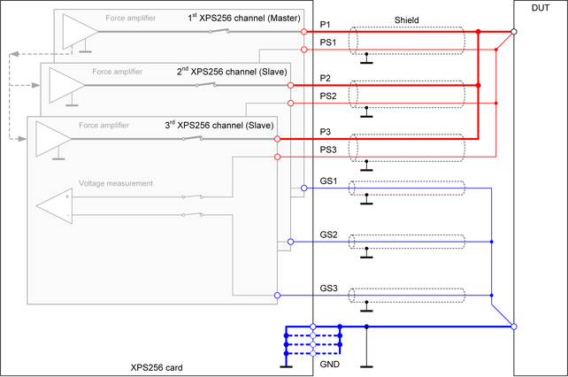

XPS256 ganged wiring
In order to achieve a higher output current, parallel connection of multiple XPS256 channels is supported. This is called "ganging". Some electrical design rules must be considered for ganging XPS256 channels.
An XPS256 channel can be ganged together with any other XPS256 channel in any order under the following conditions:
- Ganging is supported for any number of channels within a card.
- Flexible ganging allows channels to be assigned to a ganging group, even if they are not consecutive.
- Flexible ganging across XPS256 cards is supported for up to 4096 channels.
- The number of ganging groups is
- limited to 128 for ganging within an XPS256 card,1)
- system-wide limited to 32 for ganging across XPS256 cards.
- Reusing of ganged pins as single pins or in other ganging groups is supported only in SmarTest 8. For more information, refer to XPS256 ganged on the fly.
- For XPS256, ganging is supported in the 1 A range of the PMU exclusively,
even if less current is required or available. The maximum current per
channel is limited as follows:
- 1.0 A for voltages up to 3.0 V
- 0.6 A for voltages up to 7.0 V
For information regarding the maximum current of ganged XPS256 channels, refer to Maximum continuous voltage and current capability per card in XPS256 voltage and current capability specifications.
The pogo pins of the ganged channels must be connected together on the DUT board: A parallel connection is required for the three output pins of the channels (P#, PS# and GS#).
The ground pins (GND) of an XPS256 card are common for all channels. Therefore, all ground pins must be connected to the same ground plane on the DUT board.
Since the XPS256 channels are digitally regulated VI supplies and the on-board ganging controller uses internal data paths to balance the output current between the ganged channels, no external control connections are required between ganged XSP256 channels. This applies also for ganging across XPS256 cards.
Example
Example 1: Ganging on DUT board
Ganging on the DUT board means that the force lines of the ganged channels are connected together on the DUT board and also the sense lines are connected together on the DUT board. Single traces connect the linked force and sense lines to the DUT.

Functional changes
- Introduced in SmarTest 8.3.4
- SmarTest 8.5.0: Flexible ganging is supported.
- SmarTest 7.10.2: Flexible ganging across cards is supported in SmarTest 7.10.2.
- SmarTest 8.5.0: Flexible ganging across cards is supported in SmarTest 8.5.0.